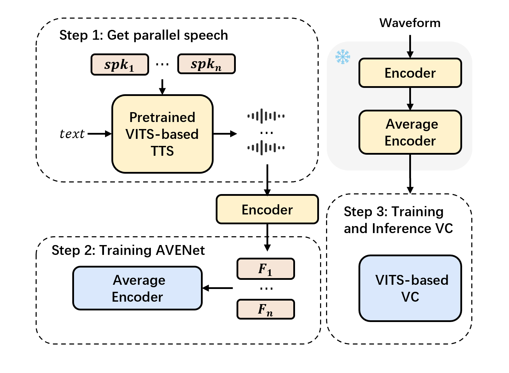
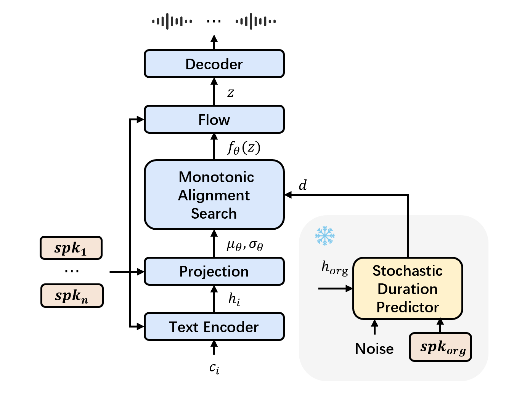

Feature disentangling has made progress in voice conversion (VC), but it is still difficult to balance timbre and content information. To address this issue, this paper proposes an innovative method for disentangling speech feature representations.
Specifically, we first introduce an ideal content feature, referred to as the average feature, which is calculated by averaging the features within frame-level aligned parallel speech (FAPS) data. To fit this feature, we then design the AVENet to take features as input and generate closely matching average features.
For generating FAPS data, we utilize a technique that involves freezing the duration predictor in a TTS system and manipulating speaker embedding.
Experiments are conducted on the performance of AVENet-extracted features within a VC system, and experimental results demonstrate its superiority over multiple current speech features disentangling methods, affirming the effectiveness of our disentanglement approach.

2. Demos -- TTS Parallel speech
Use VITS to synthesis frame-level aligned parallel speech.

Text
Speaker 1
Speaker 2
Speaker 3
Speaker 4
Speaker 5
Speaker 6
事故现场明火已经扑灭。
但这种事不会再发生了。
3. Disentangle effectiveness of AVENet
We visualized three types of features on the graph. We selected 30 frames of original features, AVENet output features, and the average feature for each frame from five source speakers. We used t-SNE to project these features into two dimensions. Figures illustrates the projection of the features. The black dots represent the average features, while each color corresponds to a different speaker. After applying AVENet, the features from the same frame are more closely clustered in the graph and are also nearer to the average feature.
The top row of figures shows t-SNE visualizations with the original features for WavLM, HuBERT, and Whisper from left to right, respectively. The bottom row of figures displays the t-SNE visualizations of the features after processing by AVENet, also for WavLM, HuBERT, and Whisper, respectively.